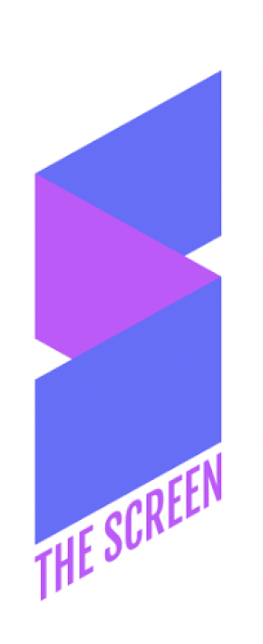
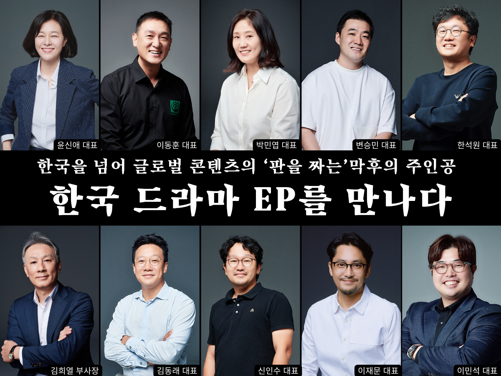

THE SCREEN

더스크린은 영화에 대한 우리 각자의 의견을 만드는 시네마 미디어입니다.
좋은 영화를 추천하고 소비하는 습관에서 한 걸음 삐져나와 오늘의 영화에 대한 다양한 의견을 교환하며 공감과 신뢰를 쌓기를 원합니다.
더스크린과 함께 영화에 대해 생각하고 대화하고 의견을 나누며 좋은 영화를 고르는 나만의 기준과 관점, 태도를 발견하기를 바랍니다.
THE SCREEN 유튜브채널
박혜은 편집장이 직접 들려주는 스크린 현장의 생생한 이야기
THE SCREEN Official
1984년 3월 창간되어 2010년까지 약 27년 동안 발간되었던 대한민국의 대표적인 대중 영화 월간지 스크린의 DNA를 계승하는 온라인 매거진
